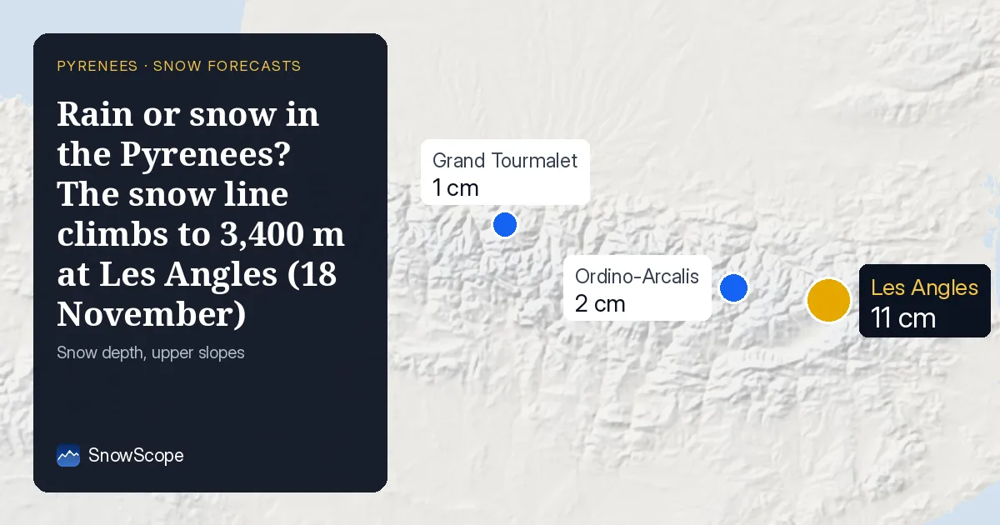

Rain or snow in the Pyrenees? The snow line climbs to 3,400 m at Les Angles (18 November)
Over the next days the 0 °C level in the Pyrenees should move between 1,900 m and 3,670 m, according to our forecast. At the warmest time of day the snow line, about 300 m lower, climbs to 3,400 m at Les Angles on Thursday 19 November. Standing at the snow line you can often see it: rain in the car park, snow from the first chairlift up.
See the live snow forecast for Boí Taüll in the SnowScope appSnow depth, powder alerts and the 3D map, free.
Snow line, resort by resort
Boí Taüll (base 2,039 m, top 2,747 m): on 19 November the snow line climbs to about 3,000 m, higher than the top, so any rain or wet snow would hit the whole mountain.
At Ordino-Arcalis (base 1,943 m, top 2,626 m) the snow line reaches about 2,900 m on 19 November, above the top: if it rains, it rains everywhere.
Grand Tourmalet (base 1,459 m, top 2,464 m): on 18 November the snow line climbs to about 3,000 m, higher than the top, so any rain or wet snow would hit the whole mountain.
At Les Angles (base 1,635 m, top 2,358 m) the snow line reaches about 3,400 m on 19 November, above the top: if it rains, it rains everywhere.
| Resort | Snow depth | New snow, 72 h | Coming, next days | Top |
|---|---|---|---|---|
| Boí Taüll | 0 cm | 2 cm | 5 cm | 2,747 m |
| Ordino-Arcalis | 2 cm | 1 cm | 5 cm | 2,626 m |
| Grand Tourmalet | 1 cm | 1 cm | 7 cm | 2,464 m |
| Les Angles | 11 cm | 0 cm | 3 cm | 2,358 m |

Rain on the snow?
Les Angles has about 11 cm up high, but on 18 November, 19 November and 21 November the snow line is above mid-mountain: rain on that snow makes it heavy and wet, and icy once it freezes again.
Baqueira-Beret (2,510 m) gets 20 mm in the forecast; in the wet hours the snow line is close to 2,420 m.
At Saint-Lary (2,515 m) we expect 27 mm of precipitation, and while it falls the snow line sits near 2,700 m.
Day by day: the 0 °C level
The 0 °C level at the resorts below, from the coldest to the warmest hour of each day: Wednesday 18 November: from 2,800 m to 3,520 m. Thursday 19 November: from 1,920 m to 3,670 m. Friday 20 November: from 1,900 m to 2,570 m. Saturday 21 November: from 2,350 m to 3,150 m.
Why the snow line is lower than the 0 °C level
Higher usually means colder. Snowflakes that drop below the 0 °C level start melting, but melting takes time, so they turn to rain only some 300 m lower: that height is the snow line. In dry air, as in the Atlas, evaporation cools the flakes and the snow line can drop even more.
Tips for skiers
- Warm air softens the snow by midday, so ski high and on north-facing slopes early.
- The 0 °C level is a forecast and can move by several hundred metres, which changes where rain turns to snow: check the map again the day before you go.
- Before any off-piste or touring day, read the official avalanche bulletin (links below).
- Snow on the map does not mean a resort is open: check lifts and dates on the resort's website.
About these numbers
Resort snow depths are the deepest snow on the resort's upper slopes from the SnowScope snow model (about 1 km, run of 18 November); they are estimates for an area, not a measurement at one point. Station values are measurements on the date shown. Forecasts can change. Always read the official avalanche bulletin before going off-piste.
Official avalanche bulletins: Météo-France / Meteocat / AEMET
Cite this report
For research, teaching or the press: the numbers and charts are free to reuse under CC BY 4.0 with this citation.
SnowScope (2026), Rain or snow in the Pyrenees? The snow line climbs to 3,400 m at Les Angles (18 November), https://snowscope.app/blog/en/2026/11/pyrenees-freezing-level-snow-line-18-november-2026.html, accessed 2026-11-18
SnowScope (Atlas Labs). (2026, November 18). Rain or snow in the Pyrenees? The snow line climbs to 3,400 m at Les Angles (18 November). SnowScope snow reports. https://snowscope.app/blog/en/2026/11/pyrenees-freezing-level-snow-line-18-november-2026.html
BibTeX
@misc{snowscope2026pyreneesfreezinglevelsno,
author = {{SnowScope (Atlas Labs)}},
title = {Rain or snow in the Pyrenees? The snow line climbs to 3,400 m at Les Angles (18 November)},
year = {2026},
month = nov,
howpublished = {\url{https://snowscope.app/blog/en/2026/11/pyrenees-freezing-level-snow-line-18-november-2026.html}},
note = {Published 2026-11-18 12:42 UTC; accessed 2026-11-18}
}· CC BY 4.0 · Methods, data and tools →
Boí Taüll: snow and temperature by height, this winter vs last (tools) →
Follow Boí Taüll
Free: a message when fresh snow is coming, and the forecast every morning.
More snow reports

Planning a December trip to Baqueira Beret? See our snow history, ticket prices starting at 70,00 € for a 1-day pass, and how it compares to Astún-Candanchú.

Freezing level reaches 3400m–3600m over the next three days, bringing rain to the snowpack from 09–11 November. Forecast from 08 November.

Grandvalira is often sold as cheap December skiing, yet natural snow at the base averages just 9 cm in past winters.